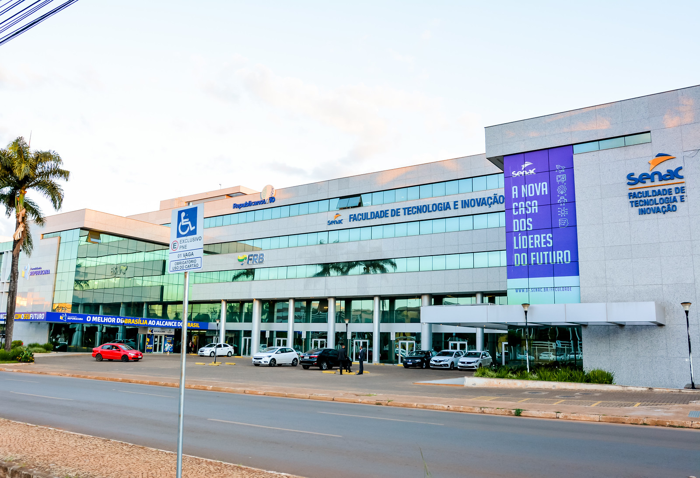
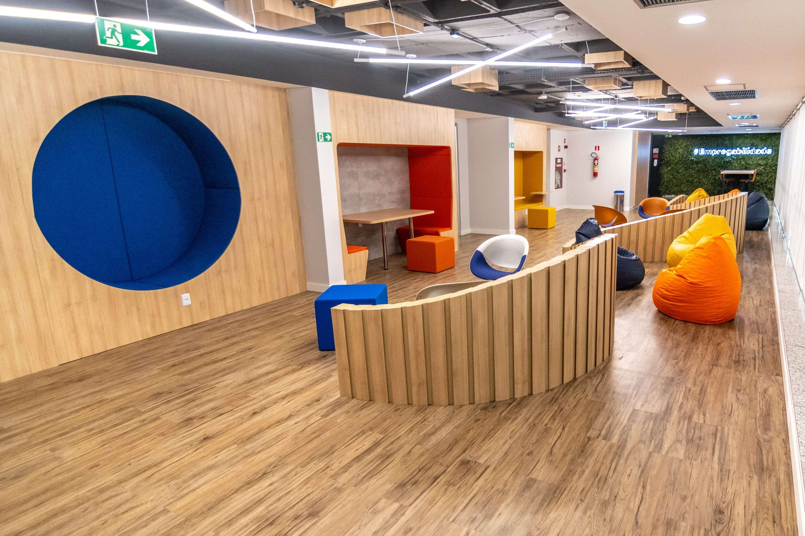
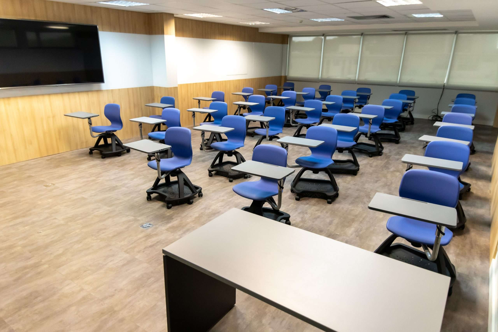
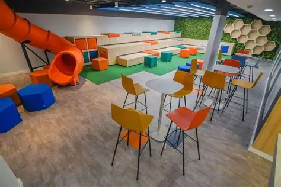
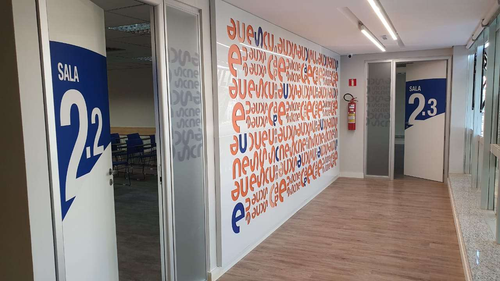
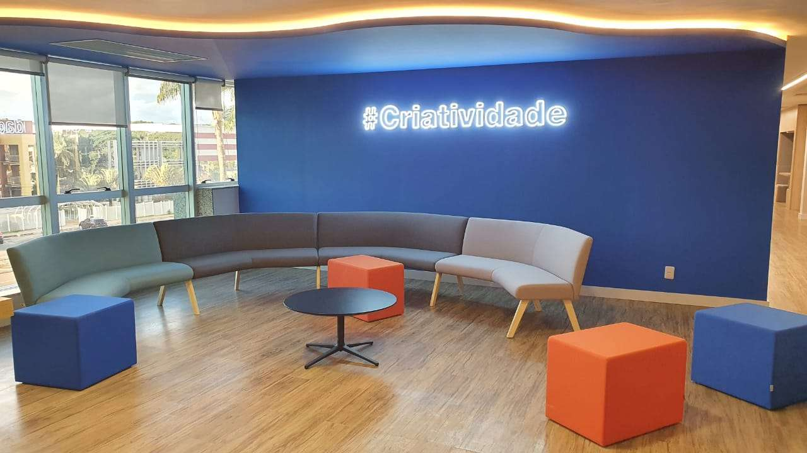
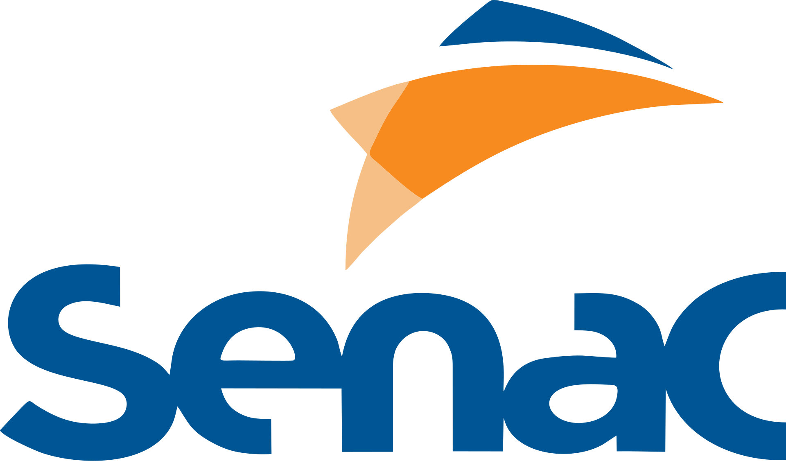

.webp)
.webp)




A Faculdade de Tecnologia e Inovação do Senac-DF, localizada na 913 Sul, em Brasília, é uma instituição de ensino superior voltada para a formação de profissionais nas áreas de tecnologia, gestão e inovação. Fundada em 2007, a faculdade tem como objetivo oferecer ensino de qualidade, unindo conhecimento teórico e prática profissional para preparar os alunos para as exigências do mercado de trabalho.
A unidade conta com uma estrutura moderna, equipada com salas de aula, laboratórios e recursos tecnológicos que auxiliam no processo de aprendizagem. Além disso, seus cursos são desenvolvidos para acompanhar as tendências do mercado, abordando temas como desenvolvimento de sistemas, segurança da informação, inteligência artificial, marketing digital e gestão de negócios. Um dos diferenciais da instituição é a integração da Inteligência Artificial em seus cursos, permitindo que os estudantes desenvolvam competências alinhadas às novas demandas profissionais. A faculdade também mantém forte conexão com o mercado de trabalho, incentivando a empregabilidade e a formação prática dos alunos. Com foco na inovação, qualidade e desenvolvimento profissional, a Faculdade Senac da 913 Sul se destaca como uma importante opção de ensino superior no Distrito Federal para quem busca crescimento acadêmico e oportunidades na área de tecnologia e gestão.
Cursos desenvolvidos para preparar os alunos para os desafios do mercado de trabalho.
Estrutura moderna, laboratórios equipados e uso de tecnologias atuais no ensino.
Formação voltada para as necessidades das empresas e oportunidades profissionais.
Salas de aula modernas, biblioteca, laboratórios e ambientes preparados para o aprendizado.






O curso de ADS forma profissionais capazes de desenvolver sistemas, sites e aplicativos, utilizando linguagens de programação, bancos de dados e metodologias modernas de desenvolvimento de software.
Capacita profissionais para administrar recursos tecnológicos, redes, infraestrutura de TI e equipes, alinhando a tecnologia aos objetivos estratégicos das organizações.
O curso prepara especialistas para proteger sistemas, redes e dados contra ataques virtuais, desenvolvendo soluções voltadas à segurança digital.
Desenvolve conhecimentos sobre estratégias digitais, mídias sociais, criação de campanhas, análise de dados e comunicação com foco no ambiente online.
Forma profissionais para atuar na administração de empresas, vendas, negociação, liderança de equipes e planejamento estratégico de negócios.
A Faculdade de Tecnologia e Inovação do Senac-DF está localizada na SGAS 913, Conjunto B, Asa Sul, Brasília - DF. A unidade possui laboratórios modernos, salas de aula equipadas e uma excelente infraestrutura para os estudantes.
Nome: Pablo Panta Freitas de Araújo
Turma: 1 B
Matéria: ADS - Padrões Web
Saiba mais sobre a Faculdade Senac:
Visite o site oficial da Faculdade Senac